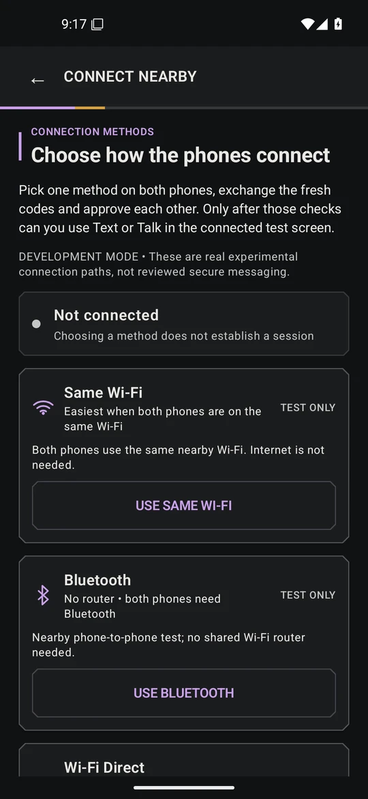
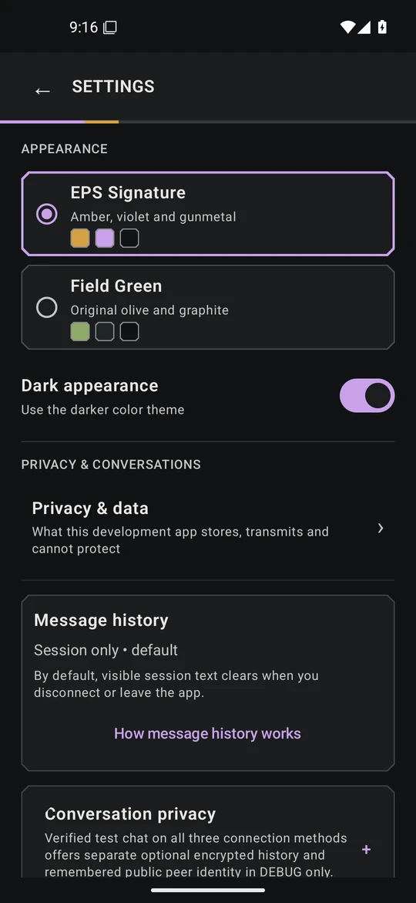
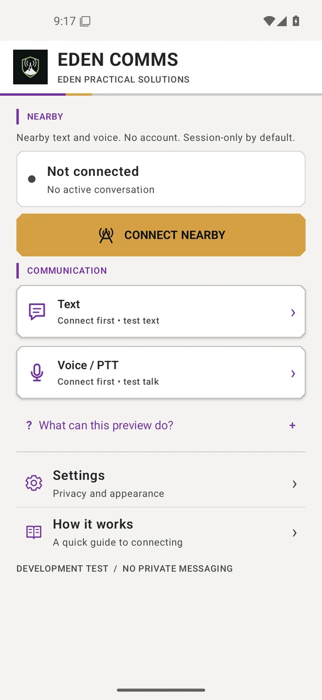

In development · Eden Practical Solutions
Eden Comms
Practical communications.
An experimental Android communications utility, not a production secure messenger.
Explore features in development
Inside Eden Comms



Local device connections, approval workflows, text and voice are in development. These disconnected screenshots do not verify successful communications or security.
Availability and safety
Do not use for sensitive or emergency communications. Production readiness is not established. Release availability is not announced.